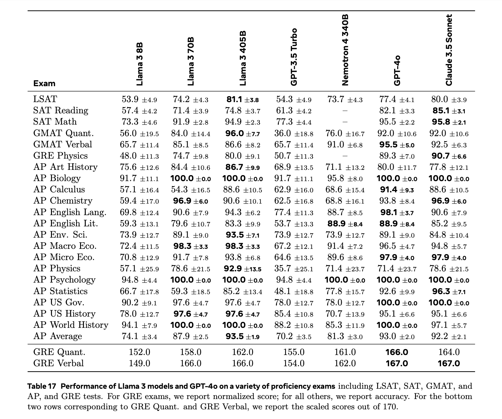

Llama-3.1-405B 技术报告
简介
这篇技术报告是 MetaAI 在 2024 年 7 月 23 日随 405B 模型发布的。先前 Llama 3 系列已经发布过 8B 和 70B 两个大小的模型，本次发布的模型在规模上增量非常大。尽管规模的提升使其成为最强的开源大语言对话模型（在本文写成时，2024 年 8 月 1 日，根据公认比较可信的评价指标 Chatbot Arena，截图如下），但本文在 benchmark 上展现出来的性能数值，相比 70B 提升不大，普遍在 1-3 个点。且考虑到模型占用的 GPU 成本，对于普通人日常用途，405B 可能性价比不如 70B 高。

报告的原文见文末 ArXiv 链接。
文章结构
Llama-3.1-405B 有文字、视频/图像和语音等多个模态的能力。本文的架构分为多个章节，先讲文字能力的预训练（pre-training）、微调（post-training）、定性能力、定量能力、局限性等，再讲视频/图像和语音的训练过程和性能数值。
技术报告原文的结构如下：
- 第一节：Introduction 简介
- 第二节：General Overview 概述
- 第三节：Pre-training 预训练
- 第四节：Post-training 微调
- 第五节：Results 定量结果
- 第六节：Inference 推理性能
- 第七节：Vision Experiments 视觉模态能力
- 第八节：Speech Experiments 语音模态能力
- 第九节：Related Work 相关工作
- 第十节：Conclusion 结论
n 句话亮点
-
Data: 训练用了 15T 的多语言数据，主要在质量上有提升（比如采取了更激进的数据过滤策略）。李沐表示 15T 的数据量训练目前能训练的语言模型已足够了，接下来需要在质量而非数量上进一步提升。
-
Scale: 训练使用了 \(3.8 \times 10^25\) FLOPs，scaling law 表示更大的参数量应该会使 performance 更好。
-
Managing Complexity: Llama-3.1-405B 模型没有采取现在常用的 MoE 架构，而是把普通的 dense Transformer 结构直接做大，并且使用了相对简单的微调策略（SFT, RS, DPO）等，所以称作步骤不是特别复杂。也有消息称 MetaAI 本来将一个 MoE 架构和一个 dense Transformer 一起训练，但是 MoE 架构的模型效果不太好，所以只放出了 dense Transformer 架构版的。其中：
- dense Transformer: 是 Transformer 模型的标准版本。每个输入 token 都通过相同的一组全连接层（Transformer 层），每个 Transformer 层都包括多头自注意力机制和前馈神经网络。
- mixture of experts: MoE 包括多个专家 experts 网络，在输入数据通过模型时，只有一部分网络被激活；训练时训练一个门控网络决定哪一部分专家网络被激活。相比简单的 dense Transformer，可以部分节省计算资源。
性能
Benchmarks 预览
在多个 benchmark 上测试 Llama-3.1-405B 的性能。此处想对本文用到的 benchmark 进行一点概述。
pre-train 阶段结束后，用于测试的 benchmark 有：
- Reading Comprehension 阅读理解
SQuAD V2(Rajpurkar et al., 2018) stf 做的一个阅读理解 benchmark，收集了 wikipedia 文章，对里面内容做 QA。QuaC(Choi et al., 2018) 全称是 QA in context，也是对 wikipedia 文章做 QA，但是所标注的 QA 数据是连续的很长的对话。比如格式是，speaker A 问，这个人出生地是哪里，B 回答，A 再问这个人哪一年做了哪个事等，如此继续。RACE(Lai et al., 2017) 是中国的英语考试阅读理解题。
- Code 代码
HumanEval(Chen et al., 2021) 格式有点像 leetcode 题目，每条数据包含题目要求和一组测试点，自动测试程序会运行模型生成的代码，判断通过多少测试点。MBPP(Austin et al., 2021) 格式大致同上。
- Commonsense Reasoning / Understanding 常识推理
CommonSenseQA(Talmor et al., 2019) 在 conceptnet 数据集的基础上产生 multichoice 问题。PiQA(Bisk et al., 2020) physical ... 物理领域的常识推理。SiQA(Sap et al., 2019) social ... 社交 / 文化领域的常识推理。OpenBookQA(Mihaylov et al., 2018) 基础科学问题。WinoGrande(Sakaguchi et al., 2021) adversarial Winograd challenge，因为 Winograd 已经被很多模型训练过了，制作了与 Winograd 数据集同格式的新数据。
- Math, Reasoning, and Problem solving 数学推理
GSM8K(Cobbe et al., 2021) 小学数学问题，问题是应用题，提供一系列思维链解题过程，每个步骤都能用简单的加减乘除解决。MATH(Hendrycks et al., 2021b) 竞赛数学题，与 GSM8K 同格式，复杂的数学符号用 LaTeX 写成。ARC Challenge(Clark et al., 2018) 全称 AI2's Reasoning Challenge，是 3-9 年级的科学题，格式是 multichoice。DROP(Dua et al., 2019) discrete reasoning over paragraphs 文本段落中夹杂数字或大小等关系，对这些数字或文本进行推理。WorldSense(Benchekroun et al., 2023) 用文本描述的图形和空间方位关系，对图形属性和空间方位进行推理。
- Adversarial 对抗攻击？
Adv SQuAD(Jia and Liang, 2017) 手动造了 SQuAD 格式的更难的问题。Dynabench SQuAD(Kiela et al., 2021) dynamic benchmark collection，有一个网站 Dynabench，允许用户随时上传新的数据。GSM-Plus(Li et al., 2024c) 将 GSM8K 里面的数字改掉，比如 3 改成 30，整数改成小数等。PAWS(Zhang et al., 2019) 问题格式是，交换某个表达中的两个词（比如，flight from NYC to Florida 中的 NYC 和 Florida），判断是否等价。
- Long context 长文本
QuALITY(Pang et al., 2022) 长文本上的 multichoice 问题。many-shot GSM8K(An et al., 2023a) 似乎这个 benchmark 搜关键词没有找到，原文中引用对应的文章也不是这个名字。
- Aggregate 综合
MMLU(Hendrycks et al., 2021a) massive multi-task language understanding，包含 57 个 STEM 学科，用来测量大模型在预训练中获得的知识。因为比较老了，很多大语言模型都在这个数据集上 overfit 了。MMLU-Pro(Wang et al., 2024b) 在 MMLU 中去掉了一部分质量差的问题，做了一个更 challenging 的 test set。（发现还是即将一起去 Waterloo 的 Yubo 同学一作）AGIEval(Zhong et al., 2023) 由一些考试题组成，高考，SAT，GRE ... 等。BIG-Bench Hard(Suzgun et al., 2023) 专门选择了一些表现不如人类好的 benchmark 集合起来。
post-train 阶段结束时，测试用的 benchmark 如下：
- General 综合类
MMLU(Hendrycks et al., 2021a) 同前文。MMLU-Pro(Wang et al., 2024b) 同前文。IFEval(Zhou et al., 2023) Instruction-following evaluation for LLMs，定义了一系列“可以验证的指令”，比如“写 400 字”“至少说 3 次关键词”，测试模型遵守指令的能力。
- Math and Reasoning 数学推理
GSM8K(Cobbe et al., 2021) 同前文。MATH(Hendrycks et al., 2021b) 同前文。GPQA(Rein et al., 2023) graduate-level Google-proof QA benchmark，由 biology, physics, chemistry 领域的专家写成的非常难的问题。ARC-Challenge(Clark et al., 2018) 同前文。
- Code 代码
HumanEval(Chen et al., 2021) 同前文。MBPP(Austin et al., 2021) 同前文。HumanEval+(Liu et al., 2024a) 将 HumanEval 扩大了 80 倍做成了这个数据集。MBPP EvalPlus (base)(Liu et al., 2024a) 将 MBPP 扩大了 35 倍做成了这个数据集。MultiPL-E(Cassano et al., 2023) 扩展 HumanEval 和 MBPP 到了 18 种编程语言。
- Multilinguality 多语言
MGSM(Shi et al., 2022) 将 GSM8K 数据集翻译成了 10 种文字不同的语言。（是我博导的工作）Multilingual MMLU(internal benchmark) 内部数据集，没有搜到，可能没有公开。
- Tool-use 使用工具
Nexus(Srinivasan et al., 2023) 很奇怪，这个数据集能搜到的条目只有 huggingface 并且点开 404 了。API-Bank(Li et al., 2023b) 由 73 个 API 工具构成，根据模型产生的对话中调用 API 的情况，测试模型是否能调用、检索+调用、规划+检索+调用 API。API-Bench(Patil et al., 2023)BFCL(Yan et al., 2024)
- Long context 长文本
ZeroSCROLLS(Shaham et al., 2023)Needle-in-a-Haystack(Kamradt, 2023)InfiniteBench(Zhang et al., 2024)
性能数值
在这些 benchmark 上测试时，由于单次结果不稳定（先前我们普遍的做法常常是多次结果求平均值等），本技术报告采用 Maddan et al.(2024) 提出的 95% confidence interval (CIs) 方法，通过计算置信区间来估计方差。这个方法假设测试得到的数值服从正态分布，如果单次测试得到的数值为 S，数据集大小为 N，那么置信区间为
由置信区间宽度除以临界值 1.96 可以得到标准差 -> 方差。
post-train 完成后，结果的总表如下

可以看出其实 Llama-3.1-405B 在 70B 上有提升，但相比参数量的提升，性能提升并不是很大，很多 benchmark 上都在 2-3 个点。考虑到前面提到可能 405B 可能训练了 MoE 和 dense Transformer 两个模型但是后者没训成功，不知道发布版 405B 性能比预期低是不是也是这个原因。
训练
TODO
视频/图像能力的训练在文字能力训练结束之后，有额外的 encoder 和 decoder，训练时将文字能力的权重冻结，只调其它模态的参数。
TODO
多模态能力
TODO